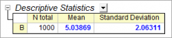
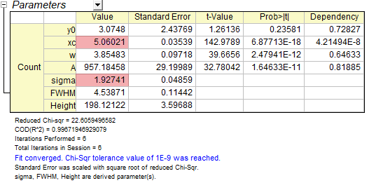
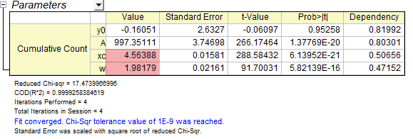

Verteilungsanpassung mit Wahrscheinlichkeitsdichtefunktion und kumulativer Verteilungsfunktion
PeakFit-on-FreqCountResult
Zusammenfassung
Um die Positions- oder Skalierungsparameter einer Stichprobenverteilung herauszufinden, kann eine Verteilungsanpassung für die Daten durchgeführt werden. Sie können jedoch auch eine Wahrscheinlichkeitsdichtefunktion oder kumulative Verteilungsfunktion für eingeteilte Daten anpassen, um diese Werte zu erhalten. Dieses Tutorial zeigt Ihnen, wie Sie diese Parameter durch Kurvenanpassung schätzen.
Origin-Version mind. erforderlich: 2016 SR2
Was Sie lernen werden
- Normalverteilte Daten zur Anpassung erzeugen
- Mit Wahrscheinlichkeitsdichtefunktion (PDF) anpassen
- Mit kumulativer Verteilungsfunktion (CDF) anpassen
Beispiel und Schritte
Normalverteilte Daten zur Anpassung erzeugen
- Führen Sie das folgende Skript aus, um den Stichprobendatensatz zu erstellen:
newbook; col(2) = normal(1000) * 2 + 5;
Dieses Skript erzeugt 1000 normalverteilte Punkte, wobei der Mittelwert ≈ 5 und σ ≈ 2 ist.
- Sie können zuerst die einfache deskriptive Statistik für diese Spalte durchführen, um die entsprechende Ausgabe der Momente zu sehen.
Markieren Sie die Datenspalte und wählen Sie Statistik: Deskriptive Statistik: Spaltenstatistik, um den Dialog zu öffnen. Stellen Sie sicher, dass auf der Registerkarte Eigenschaften die Kontrollkästchen Mittelwert und Standardabweichung aktiviert sind. Klicken Sie dann auf OK, um einen Bericht zu erzeugen.

Sie können dem Berichtsarbeitsblatt entnehmen, dass der Mittelwert und die Standardabweichung nah an dem Wert liegen, den Sie gerade festgelegt haben.
Mit Wahrscheinlichkeitsdichtefunktion (PDF) anpassen
- Um die Daten mit der PDF anzupassen, sollten Sie zuerst die eingeteilten Daten mit dem Hilfsmittel Häufigkeiten zählen berechnen. Markieren Sie die Spalte der Quelldaten und wählen Sie Statistik: Deskriptive Statistik: Häufigkeiten zählen im Menü. Dieser Dialog zählt die Anzahl der Datenpunkte in den festgelegten Klasseneinteilungen.
- Erweitern Sie den Zweig Steuerung Berechnung und stellen Sie sicher, dass Klassenbreite in der Gruppe Schritt nach aktiviert ist. Setzen Sie die Klassenbreite auf 0,5 (Sie müssen dazu das Kontrollkästchen Auto deaktivieren).
- Stellen Sie sicher, dass die Kontrollkästchen Klassenmitte, Anzahl und Kumulative Anzahl im Zweig Zu berechnende Eigenschaften aktiviert sind. Klicken Sie auf OK, um die Daten zu zählen.
- Markieren Sie die Spalte Counts im Ergebnisblatt und wählen Sie dann im Menü Zeichnen: 2D: Balken: Säulendiagramm, um ein Säulendiagramm zu erstellen. Jetzt haben wir das Histogramm der Quelldaten.
- Wählen Sie bei aktivem Diagramm Analyse: Anpassen: Nichtlinearer Fit im Menü, um den Dialog NLFit aufzurufen. Wählen Sie dann die Funktion Gauss in der Kategorie Statistics. Belassen Sie die anderen Optionen bei der Standardeinstellung und klicken Sie direkt auf die Schaltfläche Fit, um den Anpassungsbericht auszugeben.

Aus dem Anpassungsbericht geht hervor, dass das angepasste xc und sigma nah bei 5 und 2 liegen.
Mit kumulativer Verteilungsfunktion (CDF) anpassen
- Um die Daten mit CDF anzupassen, sollten Sie von den kumulativen eingeteilten Daten ausgehen. Wählen Sie das Blatt FreqCounts1 aus dem vorherigen Abschnitt. Markieren Sie die Spalte Cumulative Count. Wählen Sie im Menü Zeichnen: 2D: Symbol: Punktdiagramm, um die CDF-Punkte zu zeichnen.
- Wählen Sie bei aktivem Diagramm Analyse: Anpassen: Nichtlinearer Fit im Menü, um den Dialog NLFit aufzurufen. Wählen Sie dann die Funktion NormalCDF in der Kategorie Statistics. Belassen Sie die anderen Optionen bei der Standardeinstellung und klicken Sie direkt auf die Schaltfläche Fit, um den Anpassungsbericht auszugeben.

Aus dem Anpassungsbericht geht hervor, dass das angepasste xc und w nah bei 5 und 2 liegen.